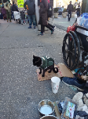

Here we have a special cat friend that we met in Manhatten. Miss Molly is a huge New York Jets fan and loves to eat leftovers after the games.
She is a sweet cat that enjoys football, catnip and scratches behind the ear
These cats are the mouse trappers, greeters and door guardians of the corner convienient stores aka Bodegas. They get the title "Bodega Cats"